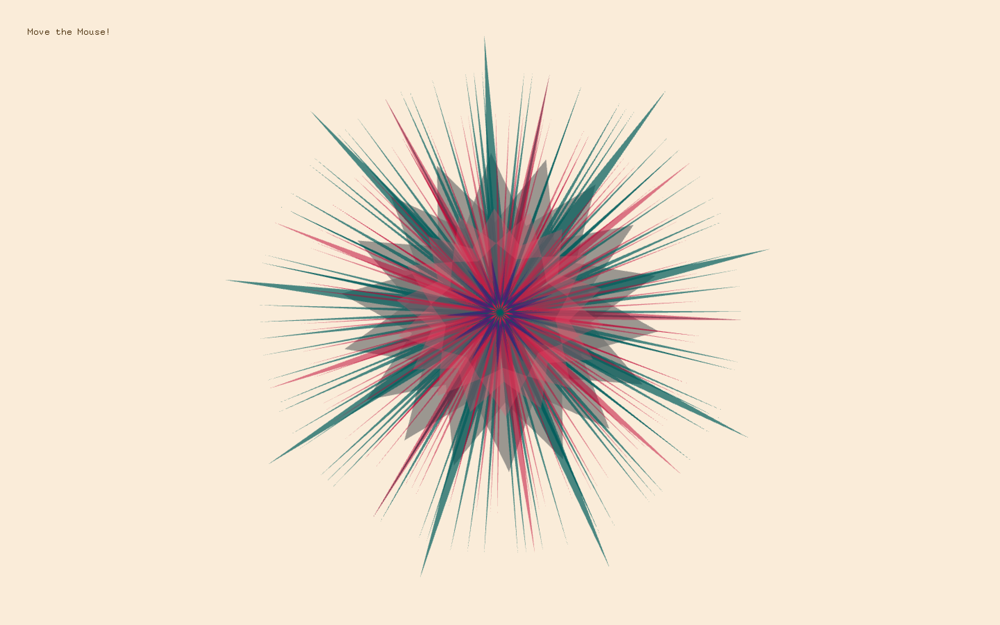
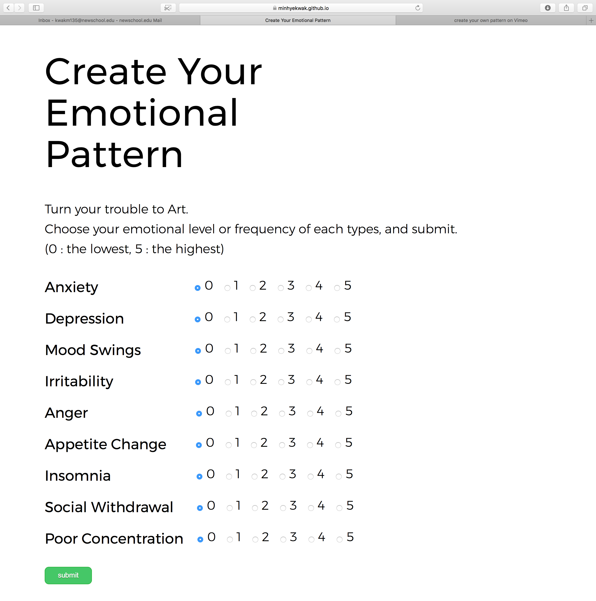

Create Your Emotional Pattern | September 23, 2017
Due to different kinds of hormones along the menstrual cycle, most women keep getting through various emotional status. Anxiety, depression, mood swings, irritability, anger, appetite change, insomnia, social withdrawal, poor concentration, and so on. Through interaction project, I would like to help users see their own painful emotion and turn it to a beautiful art piece.
The left screenshot is an website I constructed. Users(or audience) can input their emotional trouble with different level of frequency through touch screen in the exhibition. The level or frequency is divided by 0 to 5, users can choose one of them. After they finished input each emotion level, then they have to submit to make a pattern. Then according to their types and pitches of each emotion, a unique pattern will be generated in the screen. website link
This interaction project has a meaning that there is no need to be ashamed to expose pain or trouble. Rather, when it will be revealed, it can turn into a beautiful art. There is no need to pretend like "I'm always fine" attitude. Sometimes the world becomes more beautiful when people accept their weaknesses and not be afraid to share them to one another.
The pattern keeps rotating along the mouse is moving. This movement reminds me the rotation of earth, moon, and other planet. Maybe our repeating life cycle is derived from mother nature. Embrace it, and be confident.